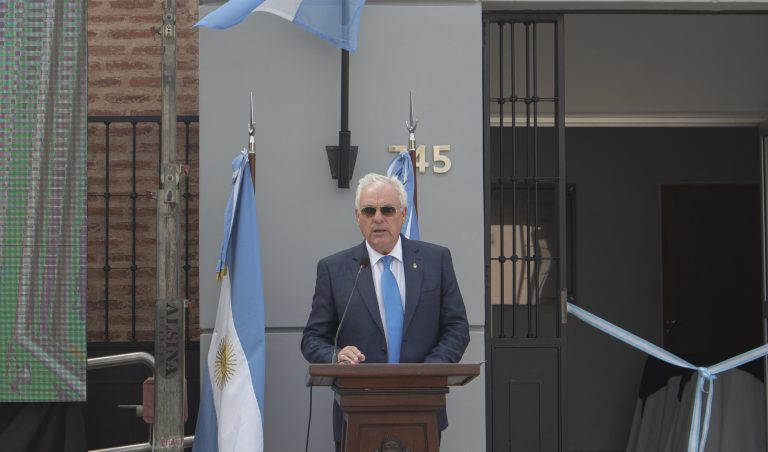

JUZGADO NUMERO 10
Se abrio un nuevo juzgado en la ciudad de Buenos Aires
Ver esta noticia
NUEVA ESTETICA

Empezó la transición a un nuevo sistema en el Poder Judicial
Ver esta noticia
CASO DE LAVADO DE DINERO
Conocé el veridicto del Juicio por lavado de dinero
Ver esta noticia
JUICIOS DIGITALES
Descubrí como funciona el nuevo servicio de Juicio Digital
Ver esta noticia
REFACCIONES

Conocé las nuevas refacciones de la casa del Poder Judicial
Ver esta noticia
PROTESTAS
Corroborá si podes acercarte a las sedes del poder judicial
Ver esta noticia